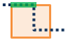

Prekryť vrstvy

Prekrytie kombinuje dve vrstvy do jednej. Na prekrytie môžete nazerať ako na pohľad cez sadu máp a vytvorenie jedinej mapy obsahujúcej všetky informácie nachádzajúce sa v celej sade. Prekrytie je viac ako len zlučovanie línií; všetky atribúty prvkov využitých v prekrytí sú prenesené do finálneho produktu. Prekrytie sa používa na zodpovedanie jednej z najzákladnejších geografických otázok, "Čo sa nachádza nad čím?" Napríklad:
- Ktoré parcely sú na území 100-ročnej záplavovej oblasti? (Vnútri je len iný spôsob ako povedať navrchu.)
- Aké cesty sú v ktorých okresoch?
- Aký druh využitia územia sa nachádza na akom type pôdy?
- Aké studne sú v opustených vojenských základniach?
Ak je zaškrtnuté Použiť aktuálny rozsah mapy, prekryté budú len prvky vo vrstve vstupu a prekrytia, ktoré sú viditeľné v rámci aktuálneho rozsahu mapy. Ak je nezaškrtnuté, všetky prvky vo vrstve vstupu a vrstve prekrytí budú prekryté, aj pokiaľ sú mimo aktuálneho rozsahu mapy.
Vybrať vstupnú vrstvu
Bodová, líniová alebo plošná vrstva, ktorá bude prekrytá.
Navyše k výberu vrstvy vašej mapy, môžete zvoliť Vybrať analytickú vrstvu, ktorá je na spodku rozbaleného zoznamu. Táto možnosť otvára galériu, kde môžete prehľadávať a zvoliť dátovú sadu z rôznych zdrojov na použitie vo vašej analýze.
Vybrať vrstvu prekrytia
Vrstva na prekrytie so vstupnou vrstvou.
Navyše k výberu vrstvy vašej mapy, môžete zvoliť Vybrať analytickú vrstvu, ktorá je na spodku rozbaleného zoznamu. Táto možnosť otvára galériu, kde môžete prehľadávať a zvoliť dátovú sadu z rôznych zdrojov na použitie vo vašej analýze.
Vybrať metódu prekrytia
Metóda prekrytia definuje ako je kombinovaná vstupná vrstva s vrstvou prekrytia.
- Pretnúť—Výsledok bude obsahovať len tie prvky alebo časti prvkov vo vstupnej vrstve, ktoré sa prekrývajú s prvkami vrstvy prekrytia. Pri pretínaní líniových alebo plošných prvkov máte možnosť definovať typ prvkov, ktoré chcete mať vo výstupe.
Body s bodmi


Body s líniami


Body s plochami


Línie s líniami


Línie s plochami



Plochy s plochami


- Zjednotiť - Výsledok bude obsahovať prvky zo vstupnej vrstvy ako aj z vrstvy prekrytia. Možnosť Zjednotenia je dostupná len ak aj vstupná vrstva a vrstva prekrytia obsahujú plošné prvky.
- Vymazať - Výsledok bude obsahovať prvky alebo časti prvkov vo vrstve vstupu, ktoré sa neprekrývajú s plochami vo vrstve prekrytia. Vrstva prekrytia môže obsahovať plošné, líniové alebo bodové prvky.
Ak je zaškrtnuté Použiť aktuálny rozsah mapy, prekryté budú len prvky vo vrstve vstupu a prekrytia, ktoré sú viditeľné v rámci aktuálneho rozsahu mapy. Ak je nezaškrtnuté, všetky prvky vo vrstve vstupu a vrstve prekrytí budú prekryté, aj pokiaľ sú mimo aktuálneho rozsahu mapy.
Názov výslednej vrstvy
Toto je názov vrstvy, ktorá bude vytvorená v zložke Môj obsah a pridaná do mapy. Bude mať rovnaký typ prvkov (plochy, línie alebo body) ako vrstva prekrytia. Predvolený názov je založený na metóde prekrytia a názve vstupnej vrstvy. Ak už vrstva existuje, budete požiadaný zadať iné meno.
Použitím rozbaľovacieho menu Uložiť výsledok v, môžete zadať názov novej zložky v zložke Môj obsah, kam bude výsledok uložený.